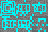
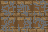
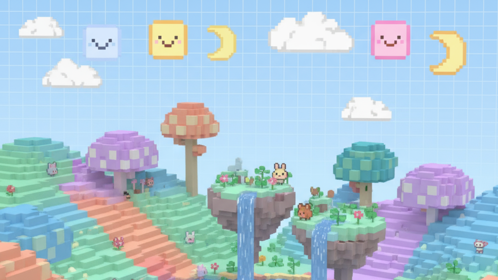

GO TO VEILNET
Official Developer Portal
LatticeVeil is an experimental voxel project focused on performance and aesthetic clarity. Built from scratch in C# using MonoGame, it pushes the boundaries of what a solo dev engine can do.
DOWNLOAD INSTALLERProcedural generation using multi-layered Simplex noise for realistic biomes and elevations.
Optimized rendering that merges adjacent faces into single quads to reduce GPU draw calls.
Built on Epic Online Services for robust P2P networking and seamless lobby management.
Our textures utilize 16x16 pixel grids with no interpolation, ensuring maximum sharpness.
Official E-Reader: Echoes of the Continuist
The authoritative record of Caelum Prime.
---
Every working system in LatticeVeil reality has three parts:
Continuist claim: You can build almost anything if you obey the Rule of Three.
Observed consequence: If you skip the limiter, the system can still run the is collected later.
---
The Veil is the separation between places, states, and routes. Gates and transit systems stretch it.
The Echo is not a demon or a god; it is a phenomenon: pressure that seeks completion.
When a system is incomplete when its limiter is missing Echo supplies a counterfeit completion so the system can run.
That counterfeit always has a cost:
Continuist field note: a system functions without a limiter, the limiter is not absent. It has merely become external.
---
Nullrock is not stone. It is refusal made physical: the world perfect limiter.
At the bottom of the world (y==0), the rules stop negotiating.
Continuist line: you reach Nullrock, you are not at the void layer. You are at refusal.
---
---
A person is a pattern as well as a body. When the body ends, the pattern may not dissipate cleanly.
Starvation, ordinary injury, death far from thin places.
Falls, drowning, burning, crushing.
Death while corrupted, during unstable craft, near shrines or repeating failure loops.
Death during gate travel or routing systems.
Death near the bottom law.
Continuist line: death without closure leaves a latch undone. The world will swing the door until it breaks.
---
Early worlds felt shallow because upper layers are easy to reconstruct.
Deep layers require:
Deep places feel different because:
Hearthward diagnostic: for quiet. When quiet vanishes, leave.
---
Mines were extraction systems built by people who thought they could outwork reality.
Fast, practical, recent. Wooden supports, simple corridors.
Engineered shafts and rooms. Continuist survey markers common.
Collapse that doesn look natural. Rooms that feel repeated.
Veilkeeper warning: not name yourself in the deep. Names linger longer than breath.
---
A Continuist-era station for stable craft. It is the canonical / regulator station.
Rule: This pack references it, but does not provide its texture/asset.


These names are canonical for texture references:
---
---
When updating the website lore page:
1) Use this pack as the ONLY canon.
2) Prefer concise headings + callouts.
3) Link terms (Veil, Echo, Nullrock, Rule of Three) to glossary anchors where available.
Scroll down to see sticky navigation
Navigation should be sticky at top

Chrono Weaver is the official V12.0.0 release. This update focuses on installer-first distribution, self-updating launcher, and temporal manipulation branding across all platforms.
latticeveil/LatticeVeil release, compares the running EXE hash to the published SHA256, and exposes a dedicated UPDATE action when a newer build exists.latticeveil_install_info.txt and refresh uninstall metadata when available so the uninstaller still shows the correct installed release name.LatticeVeilMonoGame.exe plus LatticeVeilMonoGame.exe.sha256 for updater integrity.Download: LatticeVeil V12.0.0 | Assets: Latest Assets
Major branding update to "Chrono Weaver" theme with installer-first download flow across all platforms.
Maintenance Reforged is the official V11.0.0 release. This update focuses on repository health, metadata stability, and cleaner distribution paths for both official and unofficial builds.
LatticeVeilMonoGame.exe and Assets.zip across official channels.Download: LatticeVeil V11.0.0 | Assets: Assets V11.0.0
Worldshaper Reforged is the official V10.0.0 release. This update lands the new terrain-first generation contract, storage/file-format cleanup, stronger rejoin reliability, major transparency fixes, and broad gameplay UX upgrades.
Download: LatticeVeil V10.0.0 | Assets: Assets V10.0.0
Gatekeeper's Fix is the official V9.0.0 release. This update hardens online authentication, improves launcher/build reliability, and sharpens core command/input behavior without changing the game's visual identity.
Download: LatticeVeil V9.0.0 | Assets: Assets V9.0.0
Worldforge Convergence is now the official V8.0.0 release identity. This pass finalizes distribution, aligns docs/releases, and keeps official online protected by the gate allowlist workflow.
LatticeVeilMonoGame.exe, the Worldforge runtime zip, and the safe source zip.Assets.zip only for launcher install/reset workflows.Download: LatticeVeil V8.0.0 | Assets: Assets V8.0.0
Cacheforge is live: V8.0.0 now combines spawn-first world generation, disk mesh caching, and a full texture pass so both loading flow and visual presentation ship as one unified update.
Documents/LatticeVeil/Assets.Download: LatticeVeil V8.0.0 | Assets: Latest Assets.zip
Complete world generation revolution with advanced plugin architecture and research-based algorithms.
Download: LatticeVeil V7.0.0
This release aligns lore presentation and refreshes the launcher experience.
Related assets release: Assets v6.1.1
Textures refreshed to align with the launcher and menu polish pass.
Game release: LatticeVeil v6.1.1
This release finalizes the LatticeVeil rebrand and hardens build and packaging flow.
Related assets release: Assets v6.1
Assets were refreshed to align with the LatticeVeil transition and current release packaging.
Game release: LatticeVeil v6.1.0
A massive update to our world documentation! The lore page has been fully populated with the Continuist Papers.
Dive deep into the history of the Ancient Architects on the Lore Page.
The Artificer Update is here! This major release (v6.0.0) consolidates all assets and features into a unified, high-performance voxel experience.
Check out the latest files on the GitHub Repository.
A major lore drop focused on the Continuists, the Veil, and the rules that hold the world together. This update ships new lore data, block IDs, and texture sheets while preserving existing worlds.
Multiplayer reliability has been significantly improved. This patch addresses a race condition where the Epic Online Services (EOS) configuration would sometimes fail to initialize if the remote configuration loaded after the game engine's startup sequence.
Streamlined the engine's core dependencies and networking infrastructure to improve build stability and connectivity.
Revolutionized the development workflow with a new Unified Build GUI. The engine now supports automated single-file publishing, integrated project cleanup, and simplified source distribution. We also updated the ThirdParty SDK tracking to ensure community builders can compile the game directly from the source zip without missing dependencies.
Refined the launcher's asset synchronization protocol to reduce bandwidth overhead and improve startup times for existing users.
blocks_cubenet_atlas.png from the mandatory asset manifest.
Restored UI consistency by synchronizing environmental backgrounds across all distribution channels. This fix ensures the Screenshots management page correctly renders its backdrop during runtime.
Completed the integration of Epic Online Services (EOS). The engine now supports cross-platform P2P networking, friend lists, and seamless session joining via host codes, alongside the classic LAN discovery system.
Implemented an optimized Greedy Meshing algorithm. This significantly reduces draw calls by combining adjacent voxel faces into larger quads, resulting in a 400% performance increase in complex terrain.
Officially transitioned the project to a modern C# and MonoGame foundation. This architecture provides superior stability, easier asset management, and a robust platform for future gameplay features.
A major website pass to unify documentation, preserve shareable links, and bring consistent navigation + layout behavior across the full portal.
?gui-docs) while preserving the original internal sub-tabs and styling.?lore, ?devlog, ?gui-docs) so links can be copied and shared reliably.LatticeVeilInstaller.exe so website delivery stays separate from game release assets.Synchronized website downloads and log entries with the official V11.0.0 release.
Website feeds and texture library metadata were synchronized with the official V10.0.0 release set.
V10.0.0 "Worldshaper Reforged" entry at the top of release history.v10.0.0 tags.Updated the website logs to match the latest official release and source-of-truth notes from the main project repository.
V9.0.0 "Gatekeeper's Fix" release entry as the top update.v9.0.0 tags.Updated website download UX and aligned the update feeds with the Worldforge Convergence release state.
LatticeVeilMonoGame.exe directly.V8.0.0 "Worldforge Convergence".Updated website to reflect the revolutionary V7.0.0 "Quantum Genesis" release with complete world generation overhaul, advanced plugin architecture, and security improvements.
Updated the main LatticeVeil logo with a new visual identity reflecting the v7.0.0 release.
Polished the dev log visuals to match the new release styling and eliminate rendering artifacts.
Public links were aligned with the renamed project and organization.
Optimized the 3D block inspector for mobile browsers. Implemented touch-and-drag gesture support for real-time model rotation, bringing full feature parity between desktop and mobile environments.
Added styled pages for the Privacy Policy and Terms of Service. These pages provide essential transparency regarding EOS integration and data handling, ensuring a compliant foundation for community growth.
Moved the original Crafting Table design to the legacy archive. It has been replaced by the Artificer Bench design to better align with the project's evolving lore and technical requirements.
Significantly upgraded the Asset Browser. The texture viewer now features a massive 512px pixel-perfect preview with transparency support and integrated download triggers for community creators.
Migrated all project repositories to the official @LatticeVeil organization. This unified our URL structure to latticeveil.github.io and streamlined our open-source contributor workflow.
Integrated Three.js to create a real-time web-based 3D model viewer. This tool utilizes the engine's internal UV mapping logic to allow users to preview block designs in 3D directly from the browser.
Complete documentation for LatticeVeil development and deployment tools with tabbed interface and on-brand styling.
Visual interface for updating live gate hashes and managing deployment targets
VIEW DOCSLatticeVeil is a passion project developed entirely solo. The goal is to build a modern, high-performance foundation for voxel games that respects the retro aesthetic of the past.
Enjoying LatticeVeil? Your support helps me continue developing free tools and content like this. Every donation is greatly appreciated!
Complete guide for using LatticeVeil development and deployment tools
Purpose: Build and package LatticeVeil for distribution. Creates optimized builds for different platforms and configurations.
Location: Tools/BuildGUI.ps1
.\BuildGUI.ps1